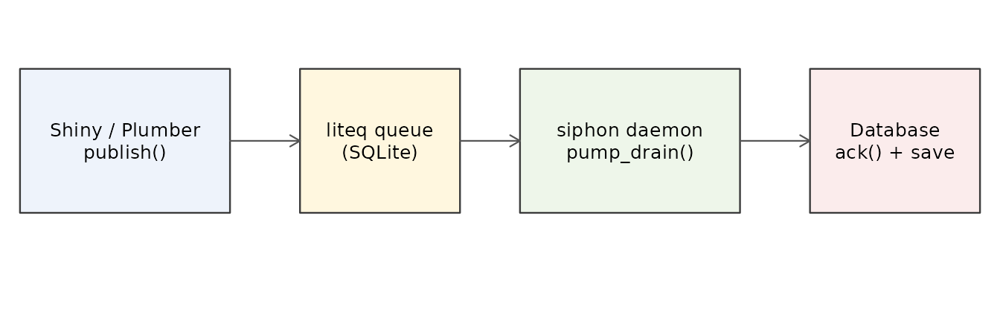

Introduction
In modern web applications built with frameworks like Shiny or Plumber, running long-running or resource-intensive computations directly in the main request handler blocks the user interface thread. This leads to high latency and a poor user experience.
A robust production architecture separates concerns:
-
The Web Server (Shiny/Plumber): Quickly accepts
user requests, writes jobs to a persistent queue (like
liteq), and queries a database asynchronously to display results. -
The Worker Daemon: A background R process that runs
indefinitely, consumes tasks from the queue, processes them in parallel
with controlled concurrency via
siphon, and saves results back to the database.
This vignette demonstrates how to implement this background daemon
pattern using siphon and liteq.
What you’ll build: a background daemon that consumes a persistent
queue, processes tasks in parallel with siphon, and
persists results, while the web tier remains responsive. We use
liteq and mirai as examples; you can swap in
other queues or backends.
It builds on the core concepts - pump(),
pump_source(), and pump_drain() - introduced
in Pull-Based Staged Pipelines with siphon
(vignette("siphon", package = "siphon")). The examples use
the liteq, mirai, and jsonlite
packages; install them to run the code below.
Why liteq?
The liteq package provides a serverless, database-backed
queue using SQLite. It is concurrent-safe, supports lock-free message
consumption, and ensures that messages are either permanently
acknowledged (ack) or returned to the queue on failure
(nack), providing transaction-like reliability.
Architecture

A web front end enqueues jobs; a siphon daemon consumes them, processes in parallel, and persists results.
A managed liteq source
First, we turn the queue into a pipeline source with commit/abort semantics.
The source consumes a message from liteq, decodes the JSON payload, and emits only the payload to the pipeline. The original liteq message stays in the main R process so siphon can acknowledge or reject it after the item leaves the pipeline.
pump_managed_source() is a convenience wrapper for
sources that need per-item control. It stores the source-owned item
internally, emits only serializable data, and calls
commit_fn(), abort_fn(), and
release_fn() at the right time.
library(siphon)
# Count READY messages in the queue. See "A note on liteq and parallel
# backends" below for why this guard is required before try_consume().
n_ready <- function(queue) {
msgs <- liteq::list_messages(queue)
if (nrow(msgs) == 0L) 0L else sum(msgs$status == "READY")
}
make_liteq_source <- function(queue, run_forever = TRUE) {
pump_managed_source(
pull_fn = function() {
if (n_ready(queue) < 1L) return(NULL)
liteq::try_consume(queue)
},
id_fn = function(msg) {
msg$id
},
data_fn = function(msg) {
jsonlite::fromJSON(msg$message)
},
commit_fn = function(msg, data) {
liteq::ack(msg)
},
abort_fn = function(msg, error = NULL, data = NULL) {
liteq::nack(msg)
},
done_fn = if (run_forever) {
function() FALSE
} else {
function() liteq::is_empty(queue)
}
)
}The production daemon
Next, we run it as a background daemon that continuously pulls jobs
from the queue and processes them. The example below uses
run_forever = TRUE to keep polling indefinitely,
on.exit() to ensure clean shutdown, and
pump_drain() to process items without growing memory over
time.
run_mirai_daemon <- function(db_path,
queue_name = "jobs",
n_workers = 4,
sleep_ms = 100) {
q <- liteq::ensure_queue(queue_name, db = db_path)
save_result <- function(task_id, result) {
# Persist to your database here
message("Task ", task_id, " -> ", result)
}
mirai::daemons(n_workers)
on.exit(mirai::daemons(0), add = TRUE) # always release workers
pipeline <- make_liteq_source(q) |>
pump(
function(payload) {
payload$x * 10
},
backend = "mirai",
max_workers = n_workers,
buffer_size = n_workers
)
message("Daemon started. Polling queue: ", queue_name)
pump_drain(
pipeline,
handle_fn = function(id, data, ok) {
if (ok && !inherits(data, "error")) {
save_result(id, data)
}
},
sleep_ms = sleep_ms # backoff when the queue is empty
)
}NOTE
Stopping the daemon. Because the loop is infinite, stop it with an interrupt (
Ctrl-C/SIGINT); theon.exit()hook then shuts themiraiworkers down cleanly. For programmatic shutdown, publish a sentinel “poison-pill” message whose handler flips a flag that yourdone_fnchecks.
A note on liteq and parallel backends
The n_ready() guard added to pull_fn()
above is essential when combining liteq with a parallel
backend (mirai_backend(), future_backend(), or
parallel_backend()).
liteq::try_consume() runs a crash-recovery sweep
whenever it is called and no READY message is
available. That sweep probes the lock file of every in-flight
(WORKING) message and blocks on the SQLite busy timeout
(roughly 10 seconds) for each lock still held by the live consumer. A
parallel siphon stage deliberately keeps several messages
WORKING while their jobs run on workers, so calling
try_consume() during that window stalls the daemon for
about 10 seconds per in-flight message - which looks like a hang.
Guarding the call so it only consumes when a READY
message actually exists avoids the crash-recovery path entirely:
n_ready <- function(queue) {
msgs <- liteq::list_messages(queue)
if (nrow(msgs) == 0L) 0L else sum(msgs$status == "READY")
}
pull_fn <- function() {
if (n_ready(queue) < 1L) return(NULL)
liteq::try_consume(queue)
}NOTE
Do not use
liteq::is_empty()as this guard: it counts all messages, includingWORKINGones, so it staysFALSEwhile jobs are in flight. Use it only fordone_fn(the daemon is finished when no messages remain at all).
Fault-tolerant execution with parallel_backend()
For a long-lived daemon, a crashed worker process should not take the
whole daemon down. parallel_backend() provides this out of
the box: it owns a PSOCK cluster, and when a worker dies it replaces the
node, replays setup expressions registered with
parallel_setup_workers(), and resubmits the in-flight job
up to retries times. This fits the queue architecture
naturally - liteq already gives at-least-once delivery via
ack/nack, and the backend’s retry semantics
are also at-least-once, so task handlers should be idempotent either
way.
To use it, swap the backend inside the daemon function:
bk <- parallel_backend(n_workers, retries = 3)
parallel_setup_workers(bk, library(jsonlite))
on.exit(parallel_stop(bk), add = TRUE)
pipeline <- make_liteq_source(q) |>
pump(
function(payload) payload$x * 10,
backend = bk,
max_workers = n_workers,
buffer_size = n_workers
)See ?parallel_backend for the full fault-tolerance
contract.
Publishing messages to the daemon
To send work to the daemon, publish messages to the queue from your
web application or any other R process. Use
liteq::publish() with both title (a
descriptive label) and message (the JSON payload):
library(liteq)
library(jsonlite)
# Create or access the queue
q <- liteq::ensure_queue("jobs", db = db_path)
# Publish a job
liteq::publish(
q,
title = "Job 1",
message = jsonlite::toJSON(list(x = 5), auto_unbox = TRUE)
)
# Publish multiple jobs
liteq::publish(
q,
title = "Job 2",
message = jsonlite::toJSON(list(x = 10), auto_unbox = TRUE)
)
liteq::publish(
q,
title = "Job 3",
message = jsonlite::toJSON(list(x = 15), auto_unbox = TRUE)
)The daemon will consume these messages, process them in parallel, and
call save_result() with the transformed data. The
title field is useful for logging and debugging, while the
message field contains the actual task data.
Using the registry primitive
Finally, if you need manual control, use the registry directly. The
pump_managed_source() wrapper is built on top of
pump_item_registry(), which stores source-owned objects by
item ID. This is the same approach that
pump_managed_source() uses internally:
make_liteq_source <- function(queue, run_forever = TRUE) {
registry <- pump_item_registry()
pump_source(
pull_fn = function() {
if (n_ready(queue) < 1L) return(NULL)
msg <- liteq::try_consume(queue)
if (is.null(msg)) return(NULL)
registry$set(msg$id, msg)
payload <- tryCatch(
jsonlite::fromJSON(msg$message),
error = function(e) e
)
list(
id = msg$id,
data = payload,
ok = !inherits(payload, "error")
)
},
item_commit_fn = function(id, data) {
liteq::ack(registry$get(id))
},
item_abort_fn = function(id, error = NULL, data = NULL) {
liteq::nack(registry$get(id))
},
item_release_fn = function(id) {
registry$remove(id)
},
done_fn = if (run_forever) {
function() FALSE
} else {
function() liteq::is_empty(queue)
},
close_fn = function() {
registry$drain(function(id, msg) {
try(liteq::nack(msg), silent = TRUE)
})
}
)
}Advantages of this architecture
This architecture keeps the web tier responsive while background workers handle long-running tasks. It bounds resources through controlled concurrency and backpressure, provides reliability via commit/abort semantics on a persistent queue, and scales independently by tuning workers-regardless of which queue or parallel backend you use. These properties realize the separation of concerns introduced at the start.